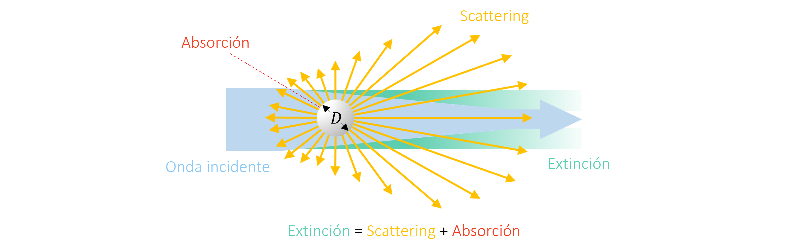
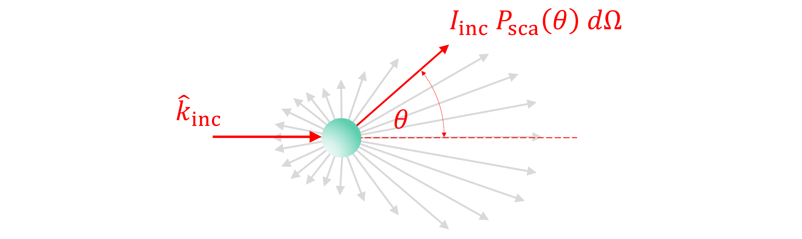
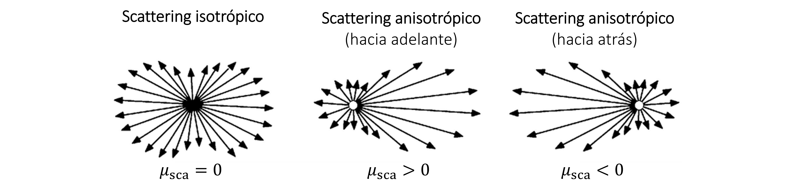
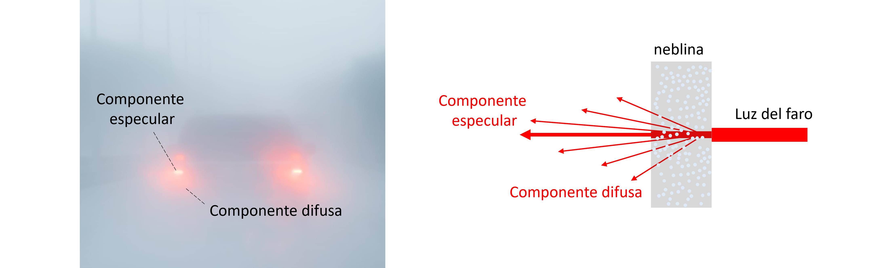

4. Scattering electromagnético#
4.1. Interacción de luz según el tamaño de un cuerpo#
Hasta el momento hemos analizado las ecuaciones de Maxwell y condiciones de borde en coordenadas cartesianas. Estas relaciones se aplican a interfaces rectas.
En el caso de cuerpos curvos, los coeficientes de Fresnel y otras fórmulas relacionadas aún son aplicables, siembre y cuando el radio de curvartura del cuerpo \(R \gg \lambda\)

4.1.1. Interacción de luz con cuerpos grandes#
A través de este principio podemos explicar la separación de colores en un arcoiris.
Primero, es importante notar que el índice de refracción del agua en el espectro visible no es constante. Este índice tiene un pequeño grado de dispersión, y decae a medida que la longitud de onda crece. Así, a partir de la ley de Snell, el ángulo de transmisión de cada onda (o color), crece proporcional a la longitud de onda.
{kind=link}
Este fenómeno produce que las ondas se separen en el espacio en función de su longitud de onda.
En una gota de agua, el efecto de separación de colores se magnifica a medida que la luz se refleja en el interior

4.1.2. Interacción de luz con cuerpos pequeños#
Cuándo las dimensiones del cuerpo, \(D\), son comparables a la longitud de onda, el radio de curvatura se hace significativo y las soluciones de las ecuaciones de Maxwell para una interface plana no son aplicables. En este caso, se produce el fenómeno de scattering de luz asociado a la disperción (o esparcimiento) de luz en múltiples direcciones.
{kind=link}
Además del scattering, tenemos el fenómeno de absorción de luz, asociada con la porción de la energía incidente absorbida por el objeto, y la extinción de luz, que corresponde a la suma de la energía de scattering y absorción.
El efecto scattering se presenta cada vez que tenemos material particulado y, por lo tanto, es común en ambientes con polvo o neblina.
El siguiente video explica el fenómeno de forma visual. Aquí, el haz de luz producido por un láser rojo ocurre debido al scattering del laser al interactuar con particular pequeñas dispersas en agua.
4.2. Scattering en esferas (solución de Mie)#
La solución analítica para predecir el efecto de scattering y absorción en esferas, desarrollada por Gustav Mie, se ha convertido en la principal referencia para entender este fenómeno.
La fórmula es derivada a partir de la solución de las ecuaciones de Maxwell en coordenadas esféricas, y permite describir con precisión la dependencia del scattering y absorción respecto a las propiedades ópticas de la partícula y el medio circundante, asi como del diámetro de la partícula.
Consideremos el modelo simple una onda electromagnética interactuando con una esfera de radio \(R\) y diámetro \(D\) tal que \(D/\lambda \sim 1\)
{kind=link}
Llamaremos al índice de refracción de la esfera \(N_p\), y al índice de refracción del exterior \(N_h\).
En este caso asumimos que el índice de refracción del exterior no tiene componente compleja, es decir \(N_h = n_h\)
El espacio está definido en coordenadas esféricas, donde:
\(\theta\): ángulo cenital
\(\phi\): ángulo azimutal
\(r\): posición radial
La solución se basa una expansión en serie de ondas esféricas \(\vec{M}_{lm}(r, \theta,\phi)\) y \(\vec{N}_{lm}(r, \theta,\phi)\) (más información en las referencias).
Por ejemplo, la componente del campo eléctrico correspondiente al scattering, \(\vec{E}_\mathrm{sca}\) es:
donde los coeficientes \(a_l\) y \(b_l\) están dados por la funciones de Ricatti-Bessel, \(\psi(x)\) y \(\xi(x)\), en la forma:
donde \(x = n_hk_0R\), y \(p = N_p/n_h\).
El campo magnético está dado por \(\vec{H}_\mathrm{sca} = \frac{n_h}{Z_0} \left(\hat{k}\times\vec{E}_\mathrm{sca}\right)\).
A partir de la solución de Mie, deducimos que la intensidad y distribución del scattering electromagnético depende de dos parámetros:
\(x = n_hk_0R\approx D/\lambda_h\), que representa la proporción entre el tamaño de la particula (\(D\)) y la longitud de onda en el medio circundante (\(\lambda_h= \lambda_0/n_h\))
\(px = N_pk_0R\approx D/\lambda_p\) que representa la proporción entre el tamaño de la particula y la longitud de onda dentro de la partícula (\(\lambda_p=\lambda_0/n_p\)).
4.2.1. Distribución del campo eléctrico#
A partir de esta solución, podemos visualizar la distribución del campo eléctrico durante el fenómeno de scattering.
La siguiente figura representa el scattering electromagnético a partir de la solución de Mie. La dirección de la onda incidente es \(\hat{k}_\mathrm{inc} = \hat{x}\), con el campo eléctrico polarizado en dirección \(\hat{e}=\hat{z}\).

En la figura de la izquierda mostramos la distribución del campo electrico total, es decir el campo eléctrico incidente (\(\vec{E}_\mathrm{inc}\)) y de scattering (\(\vec{E}_\mathrm{sca}\)). En la figura de la derecha, hemos removido \(\vec{E}_\mathrm{inc}\) para poder visualizar \(\vec{E}_\mathrm{sca}\)
Utilizando la dirección de la onda incidente como referencia, podemos ver que la intensidad del scattering es mayor hacia adelante (\(\theta = 0^o\)) y decrece a medida de \(\theta\) aumenta. Debido a la simetría axial, el scattering no varía en \(\phi\).
En general, la distribución del scattering depende del tamaño de la partícula en relación la longitud de onda.

Particularmente, cuando \(D/\lambda \ll 1\), se denomina Rayleight scattering. En este caso el campo scattering está distribuido uniformemente alrededor de la partícula
4.2.2. Función de fase (\(P_\mathrm{sca}\))#
Al igual que con el estudio de reflexión y transmisión, la solución \(\vec{E}_\mathrm{sca}\) nos permite determinar el el vector de Poyinting asociado a scattering, \(\langle\vec{S_\mathrm{sca}}\rangle = \frac{1}{2}\mathrm{Re}\left(\vec{E}_\mathrm{sca}\times\vec{H}^*_\mathrm{sca}\right)~\mathrm{[W/m^2]}\).
Notar que, en general, \(\langle\vec{S_\mathrm{sca}}\rangle\) varía según \(\theta\), \(\phi\) y \(r\).

La potencia neta por scattering, \(W_\mathrm{sca}\) se obtiene integrando \(\langle\vec{S_\mathrm{sca}}\rangle\) sobre la superticie de la esfera:
donde \(I_\mathrm{inc} = \frac{n_hE_0^2}{2Z_0}~\mathrm{[W/m^2]}\) es el flujo de energía o intensidad de la onda incidente, y \(P_\mathrm{sca}(\theta) = \frac{R^2}{I_\mathrm{inc}}\left[\langle\vec{S_\mathrm{sca}}\rangle \cdot \hat{r}\right]\), es la función de distribución de scattering o función de fase.
La función de fase se define como la energía de scattering por unidad de ángulo sólido \(d\Omega = \sin\theta d\theta d\phi\) relativo al flujo de energía de la onda incidente, \(I_\mathrm{inc}\).
En otras palabras, para una onda incidente con intensidad \(I_\mathrm{inc}\), la energía de scattering en dirección \(\theta\) es \(I_\mathrm{inc} P_\mathrm{sca}(\theta)d\Omega\)
{kind=link}
Mediante un proceso similar, podemos determinar la potencia extinguida, \(W_\mathrm{ext}\), a partir del campo total \(\vec{E}_\mathrm{tot} = \vec{E}_\mathrm{inc} + \vec{E}_\mathrm{sca}\)
4.2.3. Sección transversal de scattering (\(C_\mathrm{sca}\)) y extinción (\(C_\mathrm{ext}\))#
Al igual que con los coeficientes de Fresnel, es común definir la energía relativa a \(I_\mathrm{inc}\):
debido a que \(C_\mathrm{sca}\) y \(C_\mathrm{ext}\) están definidos en unidades de área, se denominan sección transversal de scattering y extinción, respectivamente.
Por conservación de energía, la sección transversal de absorción, \(C_\mathrm{abs} = C_\mathrm{ext} - C_\mathrm{sca}\).
4.2.4. Parámetro de asimetría (\(\mu_\mathrm{sca}\))#
El parámetro de asimetría, \(\mu_\mathrm{sca} \in [-1,1]\), nos permite cuantificar la anisotropía en la distribución del scattering.
{kind=link}
En el caso de esferas, se define por:
4.3. Analisis de scattering#
Los parámetros \(C_\mathrm{sca}\), \(C_\mathrm{abs}\) y \(C_\mathrm{ext}\) permiten cuantificar la energía de scattering, absorción y extinción relativa a la intensidad de la fuente \(I_\mathrm{inc}\), así como también su distribución en el espectro.
A continuación revisaremos tres casos particulares.
4.3.1. Particulas con índice de refracción real (\(\kappa_p \approx 0\))#
El primer caso de scattering que analizaremos es para materiales cuyo valor de \(\kappa_p\) es cero o relativamente pequeño (\(N_p \approx n_p\)). Debido a que el material no absorbe luz, tenemos que \(C_\mathrm{abs} = 0\).
Es importante recordar que la definición \(\kappa_p \approx 0\), es válida solo en regiones acotadas del espectro. Esto porque ningún material es 100% transparente en todo el espectro EM. Sin embargo, la aproximación es práctica para entender algunos fenómenos naturales.
En este grupo tenemos, por ejemplo, agua, aceite, vidrio y algunos polímeros transparentes, todos en el espectro visible.
Por ejemplo, analicemos el scattering de una esfera de agua (\(N_p\approx 1.33\)) en el aire (\(n_h = 1.0\)).
Notar que \(N_p\approx 1.33\) implica \(C_\mathrm{abs} = 0\)
Show code cell source
%%capture show_plot
import empylib.miescattering as mie
import matplotlib.pyplot as plt
import numpy as np
lam = np.linspace(0.3,1.4,200) # espectro de longitudes de onda
nh = 1.0 # índice de refracción del material circundante
Np = 1.33 # índice de refracción de la partícula
D = [0.1, 0.3, 0.5, 0.7, 1.0] # distribución de diámetros
fig, ax = plt.subplots() # creamos ejes para graficar
colors = plt.cm.jet(np.linspace(0,1,len(D))) # set de colores para las curvas
for i in range(len(D)):
Ac = np.pi*D[i]**2/4 # área transversal de la partícula
Qsca = mie.scatter_efficiency(lam,nh,Np,D[i])[1] # determinamos Csca/Ac
ax.plot(lam,Qsca*Ac,'-', color=colors[i], label=('%i' % (D[i]*1E3))) # grafico Csca
# etiquetas de ejes y formateo de la figura
fig.set_size_inches(6, 4) # tamaño de figura
plt.rcParams['font.size'] = '12' # tamaño de fuente
ax.set_xlabel(r'Longitud de onda, $\lambda$ ($\mu$m)')
ax.set_title('scattering partícula de agua')
ax.set_ylabel(r'$C_\mathrm{sca}$ ($\mu$m$^2$)')
ax.legend(frameon=False, title=r'$D$ (nm)')
plt.show()
Show code cell source
show_plot()
A partir de este gráfico podemos identificar algunos patrones comúnes en scattering:
La energía de scattering aumenta con el tamaño de la partícula
A medida que el tamaño aumenta, la longitud de onda para scattering máximo crece (red-shifting)
Esta es una característica general del scattering en este tipo de materiales.
A partir de este gráfico podemos entender muchas situaciones de la vida cotidiana.
Por ejemplo, las partículas de agua en la neblina tienen un tamaño microscópico (\(D\sim 1\mu\)m). A partir del gráfico anterior observamos que este tamaño de partícula induce scattering en todo el espectro visible, con mayor intensidad en longitudes de onda \(\lambda \sim 0.5\) \(\mu\)m.
Esto significa que la luz en la niebla será dispersada, independientemente de su longitud de onda. Así, la niebla toma el color de la luz de la fuente.
{kind=link}
Para un haz de luz incidente en un medio con partículas, llamamos componente difusa a la porción de la luz dispersada por scattering, y como componente especular a la porción no dispersada.
Otro ejemplo es el azul del cielo. En este caso las moleculas del aire son mucho más pequeñas, y el scattering es más intenso para ondas en el espectro del color azul y violeta (\(\lambda < 450\) nm)

La componente difusa, así, corresponde a los colores azul y violeta. La componente especular, corresponde al resto de los colores del espectro visible. El fenómeno expica el color azul del cielo durante el día.
4.3.2. Partículas no-metálicas con índice de refracción complejo#
Este grupo corresponde a materiales semiconductores, como el silicio y el dióxido de titanio. También incluye materiales asilantes en el espectro infrarojo, como sílice o polímeros.
En este caso, tenemos un efecto de scattering y absorción combinados. La magnitud de \(C_\mathrm{sca}\) estará definida por el tamaño de la partícula (similar al caso de partículas con índice de refracción real). La magnitud de \(C_\mathrm{abs}\), por otro lado, dependerá de la magnitud de \(\kappa_p\).
Analicemos, por ejemplo, el scattering de partículas de dióxido de titanio (TiO\(_2\)) en agua (\(n_h = 1.33\))
Show code cell source
%%capture show_plot1
import empylib.miescattering as mie
import empylib.nklib as nk
import matplotlib.pyplot as plt
import numpy as np
lam = np.linspace(0.2,1.0,200) # espectro de longitudes de onda
nh = 1.33 # índice de refracción del material circundante
Np = nk.TiO2(lam) # índice de refracción de la partícula
D = [0.05, 0.1, 0.2, 0.3] # distribución de diámetros
fig, ax = plt.subplots(1,3) # creamos ejes para graficar
# graficamos el índice de refracción
ax[0].plot(lam,Np.real, '-r', label = '$n$')
ax[0].plot(lam,Np.imag, '-b', label = '$\kappa$')
colors = plt.cm.jet(np.linspace(0,1,len(D))) # set de colores para las curvas
for i in range(len(D)):
Qext, Qsca = mie.scatter_efficiency(lam,nh,Np,D[i])[0:2] # determinamos Cext/Ac y Csca/Ac
Qabs = Qext - Qsca
ax[1].plot(lam,Qsca,'-', color=colors[i], label=('%i' % (D[i]*1E3))) # grafico Csca/Ac
ax[2].plot(lam,Qabs,'-', color=colors[i], label=('%i' % (D[i]*1E3))) # grafico Cabs/Ac
# etiquetas de ejes y formateo de la figura
fig.set_size_inches(12, 3) # tamaño de figura
plt.rcParams['font.size'] = '10' # tamaño de fuente
for i in range(3):
ax[i].set_xlabel(r'Longitud de onda, $\lambda$ ($\mu$m)')
#ax[i].set_ylim(0,6.2)
ax[0].set_title('Indice de refracción de TiO$_2$')
ax[1].set_title('Scattering partícula de TiO$_2$')
ax[2].set_title('Absorción partícula de TiO$_2$')
ax[1].set_ylabel(r'$C_\mathrm{sca} / \pi R^2$')
ax[2].set_ylabel(r'$C_\mathrm{abs} / \pi R^2$')
ax[0].legend(frameon=False)
ax[2].legend(frameon=False, title=r'D (nm)')
plt.subplots_adjust(wspace=0.3)
plt.show()
Show code cell source
show_plot1()
<>:15: SyntaxWarning: invalid escape sequence '\k'
/tmp/ipykernel_1086/574985932.py:15: SyntaxWarning: invalid escape sequence '\k'
ax[0].plot(lam,Np.imag, '-b', label = '$\kappa$')

En este caso, vemos que \(C_\mathrm{abs}\) esta condicionado a valores donde \(\kappa_p \neq 0\) (en el espectro UV, en este caso particular). El valor de \(C_\mathrm{sca}\), en cambio, se extiende en el espectro visible, similar a lo que ocurre con el efecto de la neblina.
Este efecto de scattering en particulas de TiO\(_2\), explica el color blanco de los protectores solares. Las particulas de TiO\(_2\) se agregan a la crema para absorver la radiación UV. El color blanco ocurre debido al scattering de luz visible, tal como indica la gráfica anterior.
{kind=link}
A diferencia de la neblina, sin embargo, en este caso tenemos un blanco más intenso. Como veremos en la siguiente unidad, este efecto se debe al scattering múltiple, asociado a la alta concentración de partículas de TiO\(_2\)
4.3.3. Partículas metálicas#
El naturaleza del scattering es diferente para los metales. En este caso, el movimiento libre de los electrones genera acumulación de carga en la superficie de la partícula. Como resultado, la partícula se polariza generando fenómenos de resonancia en determinadas longitudes de onda.
{kind=link}
En la siguiente figura, graficamos \(C_\mathrm{sca}\) y \(C_\mathrm{abs}\) para partículas de distinto diámetro. Ambas variables son normalizadas por al área transversal de la esfera \(\pi R^2\), para mejor comparación entre esferas de distintas dimensiones.
Show code cell source
%%capture show_plot
import empylib.miescattering as mie
import empylib.nklib as nk
import matplotlib.pyplot as plt
import numpy as np
lam = np.linspace(0.2,0.8,200) # espectro de longitudes de onda
nh = 1.0 # índice de refracción del material circundante
Np = nk.silver(lam) # índice de refracción de la partícula
D = [0.01, 0.02, 0.05, 0.08, 0.1] # distribución de diámetros
fig, ax = plt.subplots(1,2) # creamos ejes para graficar
colors = plt.cm.jet(np.linspace(0,1,len(D))) # set de colores para las curvas
for i in range(len(D)):
Qext, Qsca = mie.scatter_efficiency(lam,nh,Np,D[i])[0:2] # determinamos Cext/Ac y Csca/Ac
Qabs = Qext - Qsca
ax[0].plot(lam,Qsca,'-', color=colors[i], label=('%i' % (D[i]*1E3))) # grafico Csca/Ac
ax[1].plot(lam,Qabs,'-', color=colors[i], label=('%i' % (D[i]*1E3))) # grafico Cabs/Ac
# etiquetas de ejes y formateo de la figura
fig.set_size_inches(9, 3) # tamaño de figura
plt.rcParams['font.size'] = '10' # tamaño de fuente
for i in range(2):
ax[i].set_xlabel(r'Longitud de onda, $\lambda$ ($\mu$m)')
ax[i].set_ylim(0,6.2)
ax[0].set_title('Scattering partícula de plata')
ax[1].set_title('Absorción partícula de plata')
ax[0].set_ylabel(r'$C_\mathrm{sca} / \pi R^2$')
ax[1].set_ylabel(r'$C_\mathrm{abs} / \pi R^2$')
ax[1].legend(frameon=False, title=r'D (nm)')
plt.show()
Show code cell source
show_plot()
Para \(D < 20\) nm, \(C_\mathrm{sca}\) es despreciable en comparación con \(C_\mathrm{abs}\). El peak en \(C_\mathrm{abs}\) es el resultado de la excitación de frecuencias de resonancia en la partícula, similar al modelo de Lorentz.
Para \(D > 50\) nm, \(C_\mathrm{sca}\) crece significativamente, superando \(C_\mathrm{abs}\) para \(D > 80\) nm.
Este fenómeno se repite en otros metales, aunque con distintas magnitudes y frecuencias de resonancia.
El efecto de de scattering en nanopartículas metálicas permite explicar el cambio en los colores en la copa de Licurgo.

Esta copa del periodo romano, esta compuesta de vidrio con nanopartícula de oro y plata en forma de coloides.
4.4. Referencias#
Hetch E., Capítulo 4.2 - Esparcimiento de Rayleigh en Óptica, 5ta Ed, Pearson, 2017
Bohren C. and Huffman D. Chapter 4 - Absorption and Scattering by a Sphere in Absorption and Scattering of Light by Small Particles, 1st Ed, John Wiley & Sons, 1983
Jackson. J. D., Chapter 10 - Scattering and Diffraction in Classical Electrodynamics, 3th Ed, John Wiley & Sons, 1999